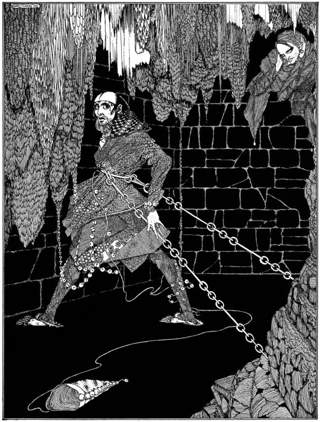
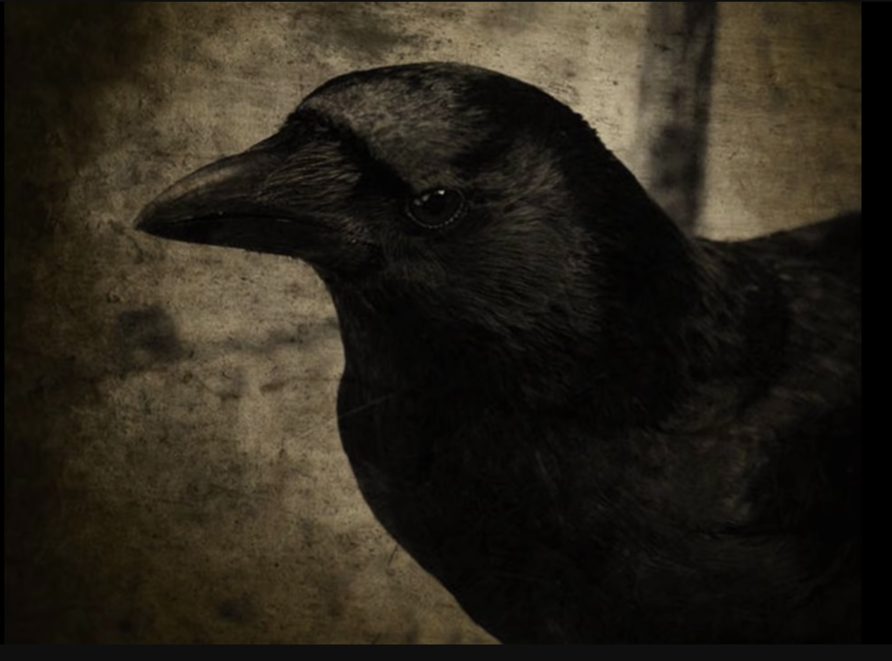

Favorite Shorts by Edgar Allen Poe
I was introduced to Edgar Allen Poe at a very young age. My dad would read bedtime stories and one of them was "The Raven".
I didn't understand anything behind it then, but now I have an appreciation for it.
One of the first horror stories I ever remember reading was “The Cask of Amontillado”, and has stuck with me my whole entire life.

"The Cask of Amontillado" tells the tale of revenge enacted upon a nobleman named Fortunato by fellow nobleman Montresor.
The short story takes place during Carnival in Italy where Montresor decides to lure Fortunato using his interest in fine wine.
Montresor decides to exact his revenge after Fortunato insults him in an unspecified way.

"The Raven" is centered around an unnamed narrator's journey into madness after realizing he will never forget his lost Lenore.
Poe uses symbols such as a talking raven, a bust of Pallas, and the narrator's chamber to share the story while representing his narrator's
struggle with grief.